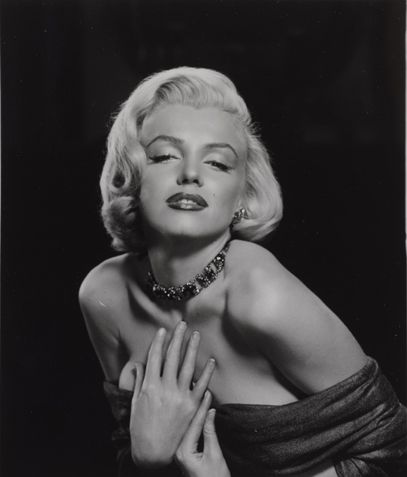

Notes
Also known as Coy Marilyn.
This work references Marilyn Monroe.
This work references Mickey Mouse, created by Walt Disney and Ub Iwerks.
Ancillary Documentation
The following reference images document visual source material associated with the composition.




Selected Online Circulation
Selected examples of the work’s online circulation, reproduction, or discussion. This list is not exhaustive; it is intended to document representative appearances of the image beyond formal exhibition and publication records.
Artist Ron English, The Man Behind Abraham Obama
· Loyal K.N.G.
La Popaganda de Ron English
· Old Skull
Ron English: el hiperrealista al que McDonald’s odiaba
· Malatinta Magazine
Ron English (1966)
· AMERICAN GALLERY – 21st Century
Marilyn Monroe in art
· Divine Marilyn
Marilyn Monroe personificada en la obra artística de Ron English
· Luis Portafolio
Cómo hacer crítica con las obras de Ron English
· Cultura Colectiva
åуôþöýøú à þý Øýóûøш
· LiveJournal